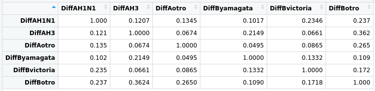
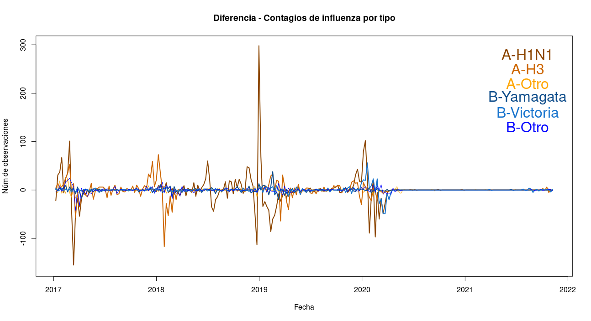

En la estadística descriptiva podemos comprobar que los máximos locales de las nuevas infecciones, desagregadas por tipo, ocurren en tiempos relativamente cercanos. Pero nunca en el mismo instante, ocurren un poco después o antes. Por lo anterior, decidí tomar las series diferenciadas y calcular sus correlaciones:

Observando los valores que toma la tabla, podemos pensar que las infecciones compiten con su mismo tipo, pues las correlaciones entre A y B son más altas que las de A con A ó B con B. Es decir, las tipo A impiden que otras tipo A infecten y análogamente con la B.
Modelar el número de nuevas infecciones puede no ser algo sencillo, por lo que decidi modelar la volatilidad tomando las series diferenciadas.

Intente modelar la volatilidad, pero no conseguí ajustar un polinomio al parámetro de dispersión de grado mayor a 2. Mi idea es ajustar la volatilidad por periodos para análizar la correlación de los efectos aleatorios. No encontré evidencia para confirmar la hipótesis.
library(hglm)## Loading required package: Matrix## Loading required package: MASS## Loading required package: hglm.data## Loading required package: sp##
## hglm: Hierarchical Generalized Linear Models## Version 2.2-1 (2019-04-04) installed## Authors: Moudud Alam, Lars Ronnegard, Xia Shen## Maintainer: Xia Shen <xia.shen@ki.se>## Use citation("hglm") to know how to cite our work.## Discussion: https://r-forge.r-project.org/forum/?group_id=558## BugReports: https://r-forge.r-project.org/tracker/?group_id=558## VideoTutorials: http://www.youtube.com/playlist?list=PLn1OmZECD-n15vnYzvJDy5GxjNpVV5Jr8modelo <- hglm2(SerieD ~ (1|Observacion),
family = gaussian(link = identity),
disp = ~ T1 + T2,
data = Proyecto)## Warning: glm.fit: algorithm did not converge
## Warning: glm.fit: algorithm did not converge## Warning in hglm.default(X = X, y = Y, Z = Z, family = family, rand.family = rand.family, :
## Residuals numerically 0 are replaced by 1e-8## Warning in hglm.default(X = X, y = Y, Z = Z, family = family, rand.family = rand.family, : Hat-
## values numerically 1 are replaced by 1 - 1e-8## Warning in dgamma(y, 1/disp, scale = mu * disp, log = TRUE): NaNs produced## Warning: glm.fit: algorithm did not converge## Warning in hglm.default(X = X, y = Y, Z = Z, family = family, rand.family = rand.family, :
## Residuals numerically 0 are replaced by 1e-8## Warning in hglm.default(X = X, y = Y, Z = Z, family = family, rand.family = rand.family, : Hat-
## values numerically 1 are replaced by 1 - 1e-8## Warning in dgamma(y, 1/disp, scale = mu * disp, log = TRUE): NaNs produced## Warning: glm.fit: algorithm did not convergemodelo## Call:
## hglm2.formula(meanmodel = SerieD ~ (1 | Observacion), data = Proyecto,
## family = gaussian(link = identity), disp = ~T1 + T2)
##
## ---------------------------
## Estimates of the mean model
## ---------------------------
##
## Fixed effects:
## (Intercept)
## -0.006001921
##
## Random effects:
## (Intercept)| Observacion:1 (Intercept)| Observacion:10 (Intercept)| Observacion:100
## -1.478740 -10.454680 1.490744
## ...
## (Intercept)| Observacion:998 (Intercept)| Observacion:999
## 0.006001921 0.006001921
## NOTE: to show all the random effects estimates, use print(hglm.object, print.ranef = TRUE).
##
## ------------------------------------------
## Estimates of the residual dispersion model
## ------------------------------------------
##
## Link = log
##
## Effects:
## (Intercept) T1 T2
## -5.024759e-09 2.656247e-20 -1.379361e-20
##
## Dispersion parameter for the random effects: 9.665699e+127
##
## Estimation converged in 3 iterations